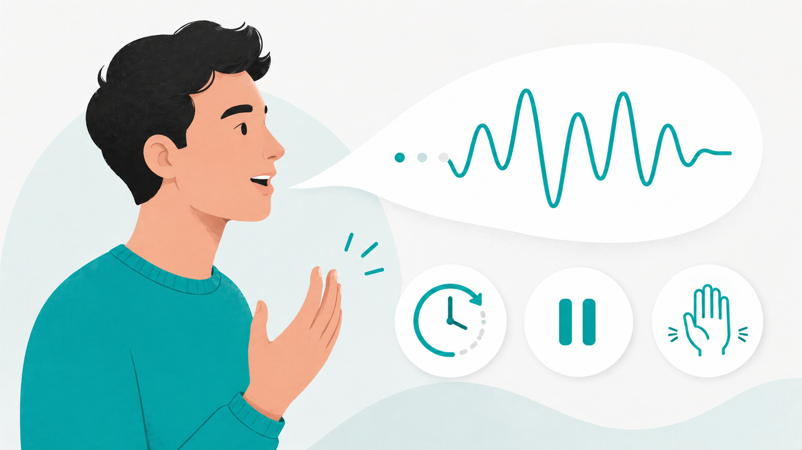

Artículo
“Técnicas para dejar de tartamudear”: ¿se puede dejar de tartamudear practicando técnicas?
Cada cierto tiempo aparece alguna persona que dice que se puede “vencer la tartamudez” o “dejar de tartamudear” si se aplican determinadas técnicas al hablar.
Yo no me atrevería a afirmar que esas estrategias quitan la tartamudez. Sin embargo, sí es cierto que muchas estrategias pueden ayudar a hablar más fluido mientras se están poniendo en práctica.
Por ejemplo, poner énfasis en algunas palabras, jugar con las entonaciones o el volumen, usar el habla lenta, marcar un ritmo con las palabras, cambiar el foco de atención hacia algo específico, usar el movimiento de las manos y los gestos faciales, entre otras.
Todas estas estrategias hacen que las palabras salgan más fluidas mientras se usan.
Sin embargo, muchas personas piensan que, de alguna manera, aplicar estas técnicas constantemente durante el habla hará que una persona con tartamudez, poco a poco, comience a hablar más fluido naturalmente, sin necesidad de usar técnicas en el futuro.
No obstante, en mi experiencia trabajando con personas con tartamudez y siendo yo mismo tartamudo, he notado que hablar fluido naturalmente con el pasar del tiempo no depende de las técnicas que uno haga, sino de diferentes factores que influyen en que el cerebro trabaje de manera más estable y le permita corregir errores de planificación y ejecución motora del habla poco a poco.
Uno de los factores puede ser la capacidad que tenga el cerebro de cada persona para adaptarse y sobreponerse a las dificultades, como el estrés o la presión emocional por miedo o vergüenza de tartamudear.
La confianza que tiene una persona podría influenciar en que su cerebro trabaje con más tranquilidad y pueda corregir errores, ya que, cuando hay emociones asociadas, el cerebro no puede trabajar fácilmente y se complican procesos cerebrales como el habla.
Entonces, en mi opinión, la fluidez espontánea se daría por la propia capacidad en que el cerebro se puede adaptar, lo cual puede ser facilitado por la confianza que una persona pueda desarrollar.
Esta confianza podría ser instaurada por el simple hecho de que no le importe su tartamudez, incluso sin practicar nada al hablar, o también por practicar técnicas para hablar más fluido, como las que muchas personas comentan.
En ese sentido, las técnicas solamente serían un apoyo para poder hablar, que puede dar confianza a la persona mientras las usa. Pero las técnicas en sí mismas no darían fluidez espontánea, sino que permitirían que el cerebro pueda reparar errores en el procesamiento del habla para luego poder hablar fluidamente, sin necesidad de usar técnicas de fluidez.
Algo que podría reforzar esta teoría es que podemos observar que las personas que dicen haber dejado de tartamudear practicando técnicas actualmente no usan ninguna técnica, sino que simplemente hablan fluidamente de manera espontánea, sin necesidad de hacer énfasis, sin hablar lento, sin mover las manos como apoyo, etc.
No obstante, es importante resaltar que estas personas, aunque practicaron técnicas para hablar más fluido, también comentan haber atravesado un proceso de enfrentar el temor a tartamudear a la par que usan estrategias para manejar su habla.
También podemos observar personas que han dejado de tartamudear y que nunca en su vida practicaron nada para dejar de tartamudear, sino que simplemente la tartamudez no les importó.
Entonces, parece ser que el factor en común de las personas que dejan de tartamudear no es específicamente la técnica que practican, sino la confianza que pueden tener.